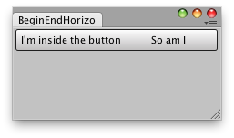

Description 描述
Disposable helper class for managing BeginHorizontal / EndHorizontal.
This is an extension to GUILayout.HorizontalScope. It can be used for making compound controls

Horizontal Compound group.
using UnityEngine; using UnityEditor;
// Create a Horizontal Compound Button class HorizontalScopeExample : EditorWindow { [MenuItem("Examples/Horizontal scope usage")] static void Init() { var window = GetWindow<HorizontalScopeExample>(); window.Show(); }
void OnGUI() { using (var h = new EditorGUILayout.HorizontalScope("Button")) { if (GUI.Button(h.rect, GUIContent.none)) Debug.Log("Go here"); GUILayout.Label("I'm inside the button"); GUILayout.Label("So am I"); } } }
Properties 属性
| rect | The rect of the horizontal group. |
Constructors
| EditorGUILayout.HorizontalScope | Create a new HorizontalScope and begin the corresponding horizontal group. |